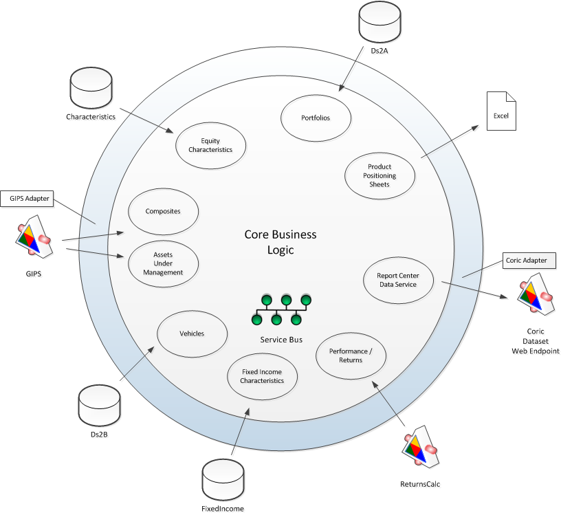
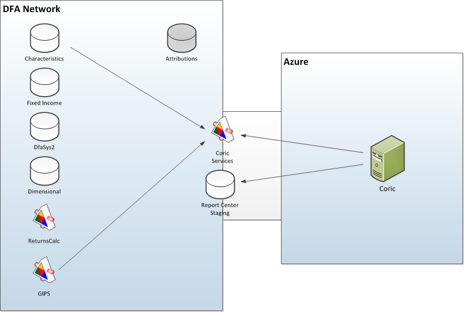

Report Center
Technical Strategy
Agenda
[Some agenda here.]
Concerns
- Reusability of Code
- Maintainability
- Scalability
- Data Security
- Testing Strategy
Technical Strategy
is
Team's Standard
Platinum
Platinum
becomes
Report Center Data Adapter
Service vs Delivery Mechanism

Physical Layout

Report => Coric
Extract => Report Center
THE END
BY Hakim El Hattab / hakim.se